JavaServer Pages (JSP) Basics
The goal of this hands-on lab is to exercise basic features of JSP,
especially focusing on the features of the JSP 1.2. You are going
to build, run, and modify JSPExamples sample
application using NetBeans.
Expected duration: 90 minutes
(excluding homework)
Software Needed
Before you begin, you need to install JDK and NetBeans
as
described here. You also need to download and unzip the
hands-on lab zip file below.
- 4003_jspbasics.zip (download)
- It contains this document and the lab contents
- Download it and unzip in a directory of your choice
OS platforms you can use
- Windows
- Solaris x86, Solaris Sparc
- Linux
- Mac OS X
Change Log
- Oct. 12th, 2006: Homework is added
- Jan. 5th, 2008: Projects now use GlassFish v2 (of NetBeans 6.0)
as deployment platforms
- June 18th, 2008: Updated with NetBeans 6.1
- Aug. 5th, 2009: Tested with NetBeans 6.7.1
- Feb. 21st, 2010: Tested with NetBeans 6.8, JSPExamples is
provided under Samples
Lab Exercises
Exercise 1: Build and run HelloWorld JSP
Application
In this exercise, you are going to create
a simple HelloWorld JSP application whose NetBeans project name is
set as "hello1".
(1.1)
Open, build, and run "hello1" sample JSP application
0. Start NetBeans IDE.
1. Open hello1
NetBeans project.
- Select File->Open Project (Ctrl+Shift+O). The Open Project dialog box appears.
- Browse down to <LAB_UNZIPPED_DIRECTORY>/jspbasics/samples
directory.
- Windows: If you unzipped the 4003_jspbasics.zip
file under
C:\
directory, the directory to which you want
to browse down should be C:\jspbasics\samples.
- Solaris/Linux: If you unzipped the 4003_jspbasics.zip
file under $HOME
directory, the directory to which you want
to browse down should be $HOME/jspbasics/samples.
- Select hello1.
- Click Open Project.
The hello1
project node appears under Projects tab
window.
2 Build and run hello1 project.
- Right-click hello1
project and select Run.
- Browser gets displayed. Type your name in the input form
field and click Submit button.
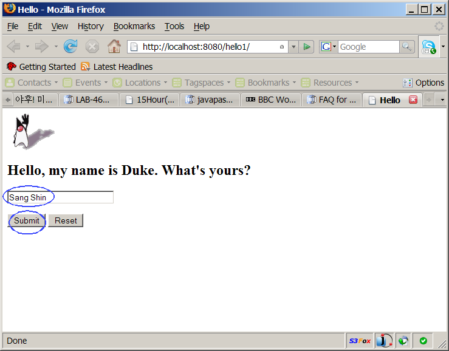
- Observe that Hello, <Your
name> is displayed.
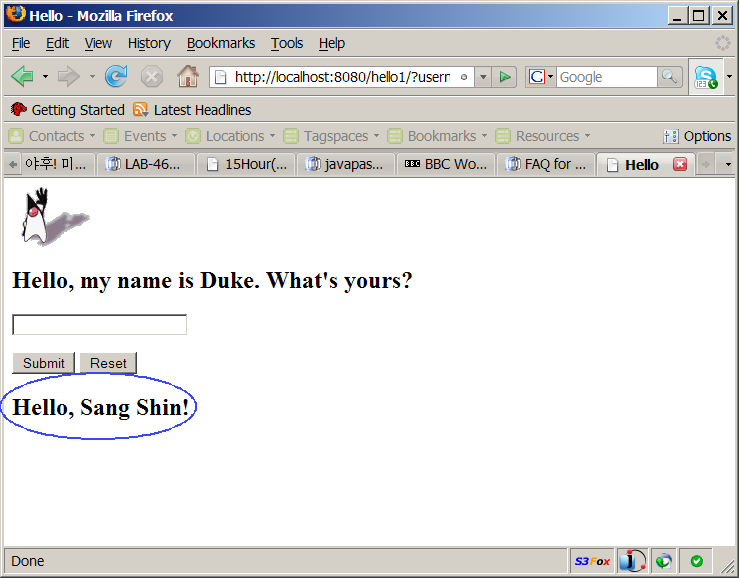
Figure-1.12: Running hello1 project
return to top of the exercise
(1.2)
Modify the application to display "hobby"
In this step, you are going to modify
the hello1 application to ask
a hobby of a user and then redisplay it.
1. Double click
index.jsp under
hello1->Web Pages
to open in the source editor.
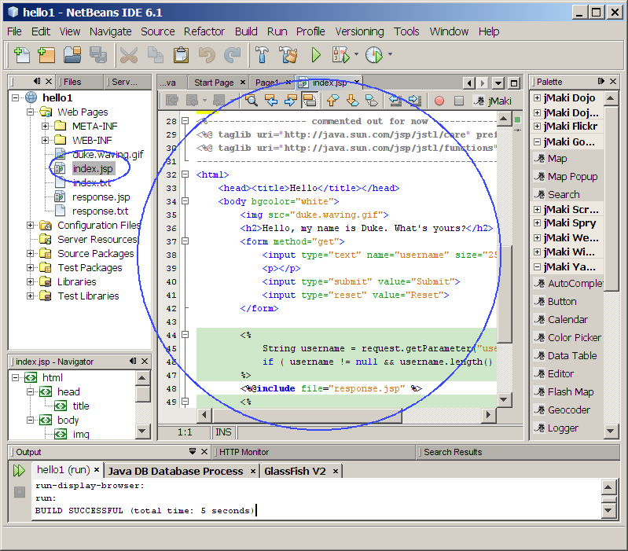
2. Modify
index.jsp as
shown in Code-1.13 below.
<%------------------
commented out for now ---------------------------
<%@ taglib uri="http://java.sun.com/jsp/jstl/core" prefix="c" %>
<%@ taglib uri="http://java.sun.com/jsp/jstl/functions" prefix="fn"
%>
---------------------------------------------------------------------%>
<html>
<head><title>Hello</title></head>
<body bgcolor="white">
<img
src="duke.waving.gif">
<h2>Hello, my name is
Duke. My hobby is Golf. What are your name and hobby?</h2>
<form method="get">
<input type="text" name="username" size="25">
<input
type="text" name="hobby" size="25">
<p></p>
<input type="submit" value="Submit">
<input type="reset" value="Reset">
</form>
<%
String username = request.getParameter("username");
if (
username != null && username.length() > 0 ) {
%>
<%@include
file="response.jsp" %>
<%
}
%>
<%------------ commented
out for now ------------
<c:if
test="${fn:length(param.username) > 0}" >
<%@include file="response.jsp" %>
</c:if>
-------------------------------------------------%>
</body>
</html>
|
Code-1.13: Modified index.jsp
3. Modify
response.jsp under
hello1->Web Pages as shown in
Code-1.14 below.
<h2><font
color="black">Hello, ${param.username}!</font></h2>
<h2><font
color="black">Your hobby is ${param.hobby}!</font></h2>
|
Code-1.14: Modified ResponseServlet.java
4. Right-click
hello1
project and select
Run.
5. Type in a name and hobby into the blank fields. Clock
Submit button.
6. Observe the name and hobby you typed are displayed. (Figure-1.15
below)
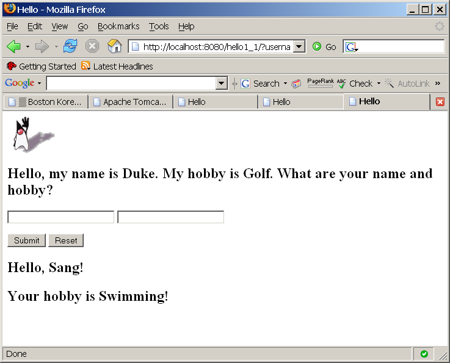
Figure-1.15: Result of running the application
return to top of the exercise
Summary
In this exercise, you have built
and run a simplest possible Web application that contains two JSP
files, index.jsp and response.jsp.
return to the top
Exercise 2: Build and run "JSP 1.2" part
of the
"JSP Examples" sample
application
In this exercise, you are going to build
and run "JSP 1.2" part of the "JSP Examples" sample application
that comes with
NetBeans.
(2.1)
Build and run "JSP Examples" sample application
1. Open
JSPExamples
NetBeans project (that is provided as part of hands-on lab zip file).
- Select File->Open Project (Ctrl+Shift+O).
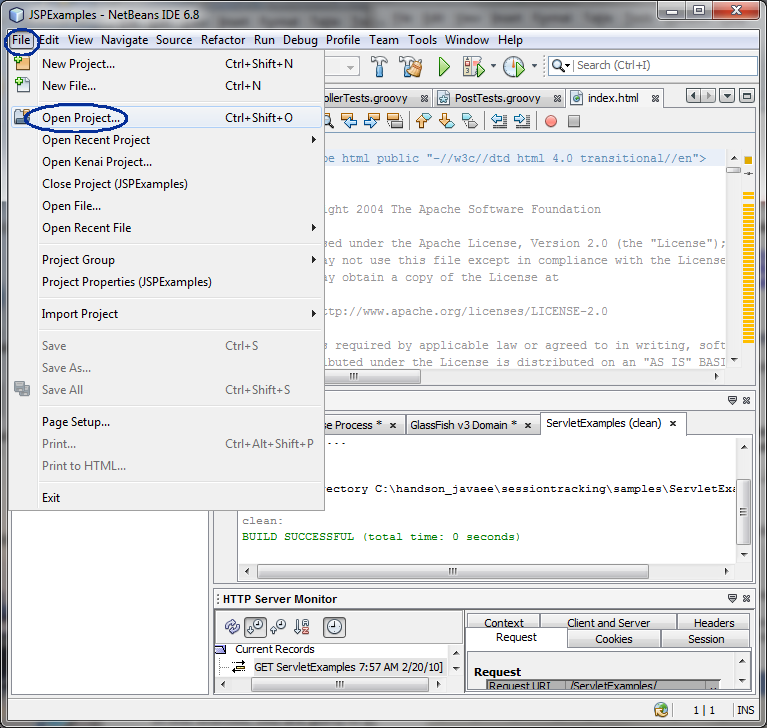
- The Open Project dialog
box appears.
- Browse down to <LAB_UNZIPPED_DIRECTORY>/jspbasics/samples
directory.
- Select JSPExamples.
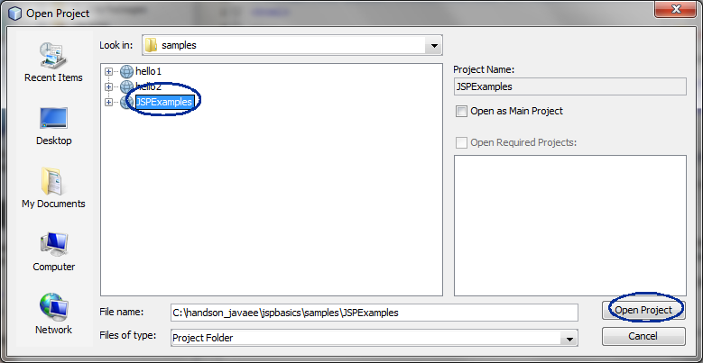
2. Build and run the project.
- Right click JSPExamples project
node and select Run.
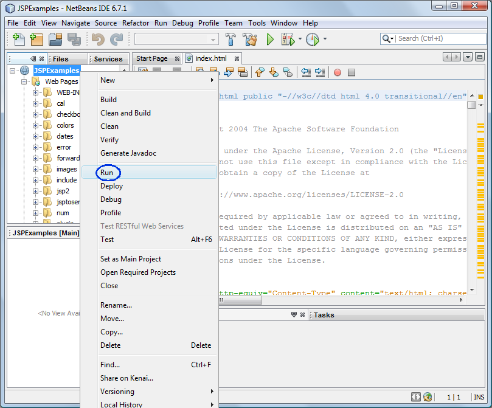
- Observe that the browser gets displayed. Scroll down to the
section with JSP 1.2 Examples.
- Click Execute to
execute
the "Date"
example.
(Figure-2.12 below)
- Click Source to see the
corresponding source code. (Figure-2.12 below)
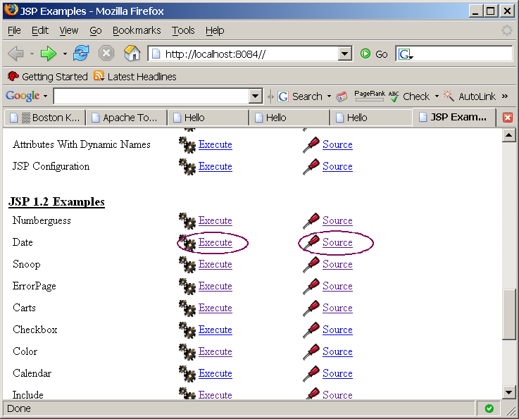
Figure-2.12: JSPExamples application
return to top of the exercise
(2.2)
Modify "Date" part of the application
In this step, you are going to "Date" part of the application to
display "Years from 1992".
1. Modify
JspCalendar.java
under
JSPExamples->Source
Packages->dates as shown in Code-2.20
below. The code fragments that need to be added are highlighted
in
bold and
blue colored font.
package dates;
import java.text.DateFormat;
import java.util.*;
public class JspCalendar {
Calendar calendar = null;
public JspCalendar() {
calendar =
Calendar.getInstance();
Date trialTime = new Date();
calendar.setTime(trialTime);
}
public int getYear() {
return
calendar.get(Calendar.YEAR);
}
public int
getYearsFrom1992() {
return calendar.get(Calendar.YEAR) - 1992 ;
}
public String getMonth() {
int m = getMonthInt();
String[] months = new String
[] { "January", "February", "March",
"April", "May", "June",
"July", "August",
"September",
"October", "November",
"December" };
if (m > 12)
return "Unknown to Man";
return months[m - 1];
}
public String getDay() {
int x = getDayOfWeek();
String[] days = new String[]
{"Sunday", "Monday", "Tuesday", "Wednesday",
"Thursday", "Friday",
"Saturday"};
if (x > 7)
return "Unknown to Man";
return days[x - 1];
}
public int getMonthInt() {
return 1 +
calendar.get(Calendar.MONTH);
}
public String getDate() {
return getMonthInt() + "/" +
getDayOfMonth() + "/" + getYear();
}
public String getTime() {
return getHour() + ":" +
getMinute() + ":" + getSecond();
}
public int getDayOfMonth() {
return
calendar.get(Calendar.DAY_OF_MONTH);
}
public int getDayOfYear() {
return
calendar.get(Calendar.DAY_OF_YEAR);
}
public int getWeekOfYear() {
return
calendar.get(Calendar.WEEK_OF_YEAR);
}
public int getWeekOfMonth() {
return
calendar.get(Calendar.WEEK_OF_MONTH);
}
public int getDayOfWeek() {
return
calendar.get(Calendar.DAY_OF_WEEK);
}
public int getHour() {
return
calendar.get(Calendar.HOUR_OF_DAY);
}
public int getMinute() {
return
calendar.get(Calendar.MINUTE);
}
public int getSecond() {
return
calendar.get(Calendar.SECOND);
}
public static void main(String args[]) {
JspCalendar db = new
JspCalendar();
p("date: " +
db.getDayOfMonth());
p("year: " + db.getYear());
p("years from
1992: " + db.getYearsFrom1992());
p("month: " + db.getMonth());
p("time: " + db.getTime());
p("date: " + db.getDate());
p("Day: " + db.getDay());
p("DayOfYear: " +
db.getDayOfYear());
p("WeekOfYear: " +
db.getWeekOfYear());
p("era: " + db.getEra());
p("ampm: " + db.getAMPM());
p("DST: " +
db.getDSTOffset());
p("ZONE Offset: " +
db.getZoneOffset());
p("TIMEZONE: " +
db.getUSTimeZone());
}
private static void p(String x) {
System.out.println(x);
}
public int getEra() {
return
calendar.get(Calendar.ERA);
}
public String getUSTimeZone() {
String[] zones = new
String[] {"Hawaii", "Alaskan", "Pacific",
"Mountain", "Central",
"Eastern"};
return zones[10 +
getZoneOffset()];
}
public int getZoneOffset() {
return
calendar.get(Calendar.ZONE_OFFSET)/(60*60*1000);
}
public int getDSTOffset() {
return
calendar.get(Calendar.DST_OFFSET)/(60*60*1000);
}
public int getAMPM() {
return
calendar.get(Calendar.AM_PM);
}
}
|
Code-2.20: Modified JspCalendar.java
2. Modify
date.jsp
under
JSPExamples->Web
Pages->dates as shown in Code-2.20
below. The code fragments that need to be added are highlighted
in
bold and
blue colored font.
<%@ page session="false"%>
<body bgcolor="white">
<jsp:useBean id='clock' scope='page' class='dates.JspCalendar'
type="dates.JspCalendar" />
<font size=4>
<ul>
<li> Day of month: is <jsp:getProperty
name="clock" property="dayOfMonth"/>
<li> Year: is <jsp:getProperty
name="clock" property="year"/>
<li>
Years from 1992: is <jsp:getProperty name="clock"
property="yearsFrom1992"/>
<li> Month: is <jsp:getProperty
name="clock" property="month"/>
<li> Time: is <jsp:getProperty
name="clock" property="time"/>
<li> Date: is <jsp:getProperty
name="clock" property="date"/>
<li> Day: is <jsp:getProperty
name="clock" property="day"/>
<li> Day Of Year: is <jsp:getProperty
name="clock" property="dayOfYear"/>
<li> Week Of Year: is <jsp:getProperty
name="clock" property="weekOfYear"/>
<li> era: is <jsp:getProperty
name="clock" property="era"/>
<li> DST Offset: is <jsp:getProperty
name="clock" property="DSTOffset"/>
<li> Zone Offset: is <jsp:getProperty
name="clock" property="zoneOffset"/>
</ul>
</font>
</body>
</html>
|
Code-2.21:Display Years from 1992
3. Right click
JSPExamples project
node and select
Run.
4. Observe that the browser gets displayed. Scroll down to the
section with
JSP 1.2 Examples.
5. Click
Execute to execute
the "
Date" example.
(Figure-2.22 below)
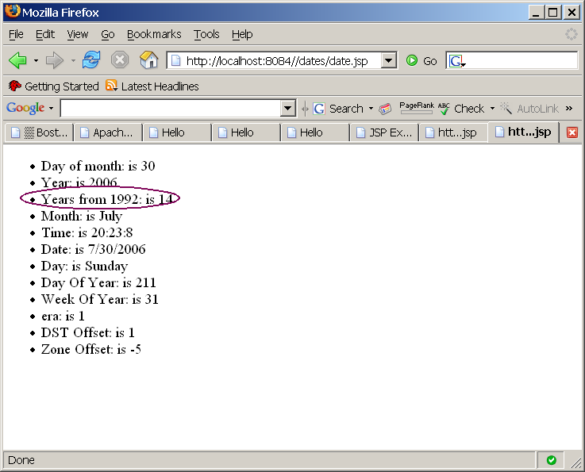
Figure-2.22: Result of running the application
return to top of the exercise
(2.3)
Modify "ErrorPage" example part of the application
In this step, you are going to display your own Error page when there
occurs an error. If you are using IE7, please see the
Trouble-shooting below.
1. Create
myOwnErrorpage.jsp
under
JSPExamples->Web
Pages->error.
- Right click error and
select New->JSP.
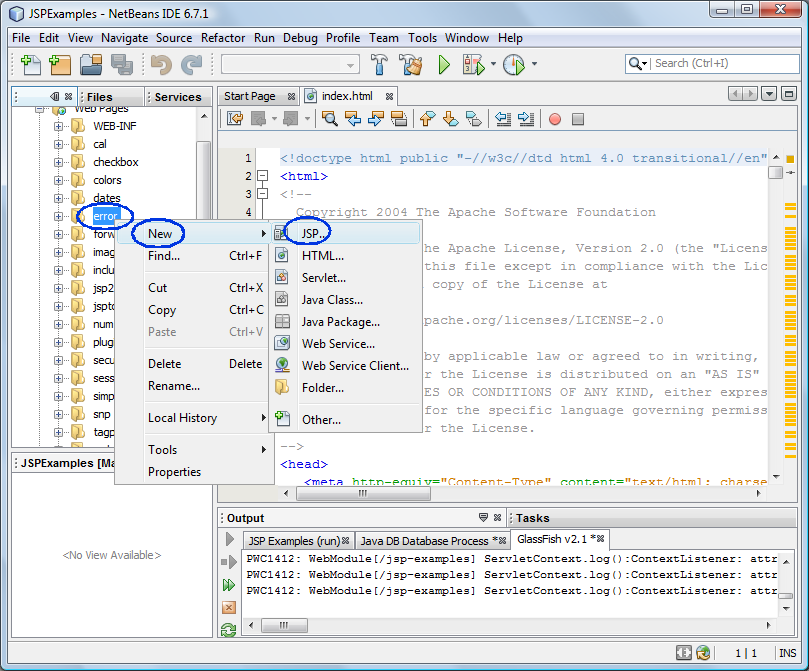
- Under New JSP File
dialog box, for JSP File Name:
field, type in myOwnErrorpage.
- Click Finish.
(Figure-2.30 below)
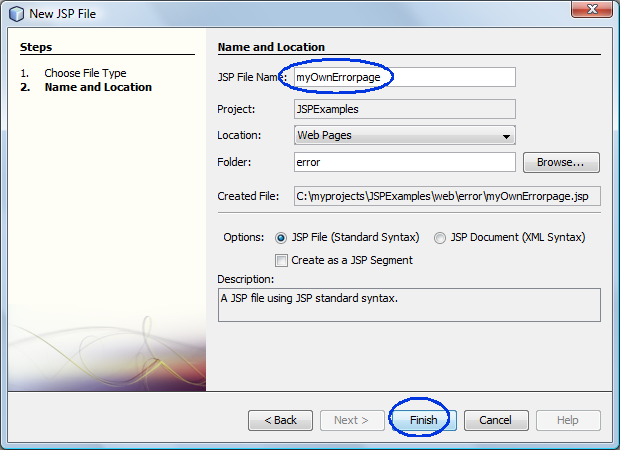
Figure-2.30: Create myOwnErrorPage.jsp
2. Replace the IDE generated
myOwnErrorpage.jsp
with the code in Code-2.31 below. This is a modified copy of the
errorpage.jsp.
<html>
<!--
Copyright 2004 The Apache Software Foundation
Licensed under the Apache License, Version 2.0 (the "License");
you may not use this file except in compliance with the License.
You may obtain a copy of the License at
http://www.apache.org/licenses/LICENSE-2.0
Unless required by applicable law or agreed to in writing,
software
distributed under the License is distributed on an "AS IS" BASIS,
WITHOUT WARRANTIES OR CONDITIONS OF ANY KIND, either express or
implied.
See the License for the specific language governing permissions
and
limitations under the License.
-->
<body bgcolor="blue">
<%@ page isErrorPage="true" %>
<h1> This is
my own error page and the exception <%=
exception.getMessage() %> tells me you
made a wrong choice.
</body>
</html>
|
Code-2.31: myOwnErrorpage.jsp
3. Modify
err.jsp
under under
JSPExamples->Web
Pages->error. The code fragments that need to be added are
highlighted
in
bold and
blue colored font.
<body bgcolor="lightblue">
<%@ page errorPage="myOwnErrorpage.jsp"
%>
<jsp:useBean id="foo" scope="request"
class="error.Smart" />
<%
String name = null;
if (request.getParameter("name")
== null) {
%>
<%@ include file="/error/error.html" %>
<%
} else {
foo.setName(request.getParameter("name"));
if
(foo.getName().equalsIgnoreCase("integra"))
name =
"acura";
if
(name.equalsIgnoreCase("acura")) {
%>
<H1> Yes!!! <a
href="http://www.acura.com">Acura</a> is my favorite car.
<%
}
}
%>
</body>
</html>
|
Code-2.32: Modified err.jsp
3. Right click
JSPExamples project
node and select
Run.
4. Observe that the browser gets displayed. Scroll down to the
section with
JSP 1.2 Examples.
5. Click
Execute to execute
the "
ErrorPage" example.
6. Select
BMW 328i from the
drop-down list.
7. Observe that myOwnErrorpage.jsp is displayed on the browser.
(Figure-2.33 below)
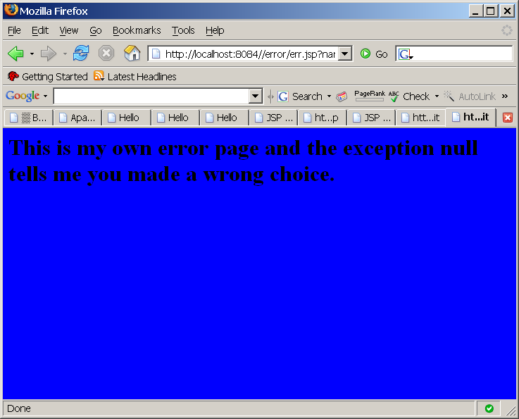
Figure-2.33: Result of running the application
Trouble-shooting: If
you are using IE6 and experience "Internal Server" error condition, do
Tools-Internet Options-Advanced tab-uncheck "Show friendly HTTP error
message"
return to top of the exercise
(2.4)
Modify "Include"
part of the sample application
1. Run the "
Include" part of
the sampe application.
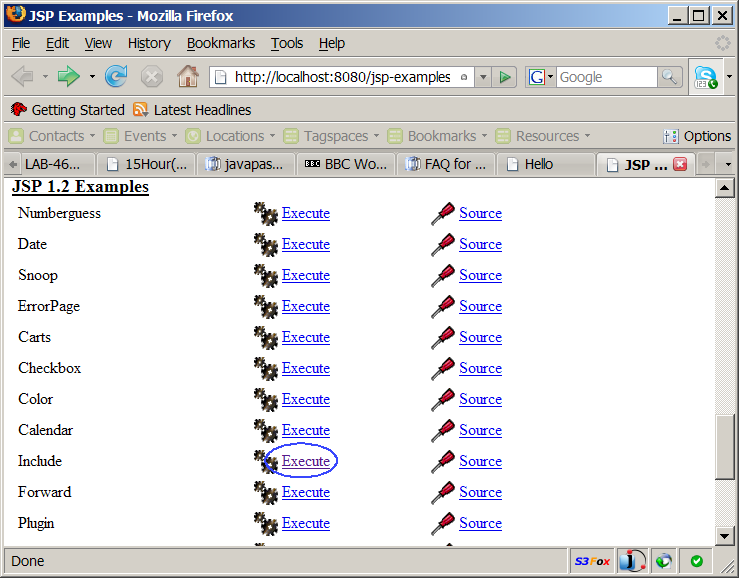
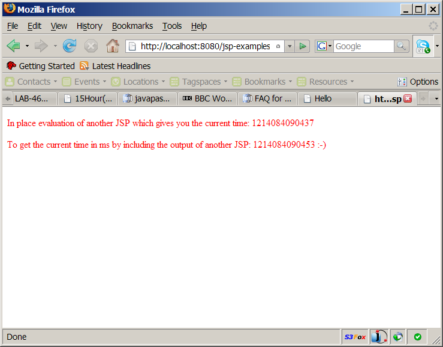
2. Create a new JSP file, called
foo1.jsp
under
JSPExamples->Web
Pages->include. The code fragments that need to be
changed from the IDE generated JSP file are highlighted in
bold and blue
colored font.
- Right click include and select New->JSP.
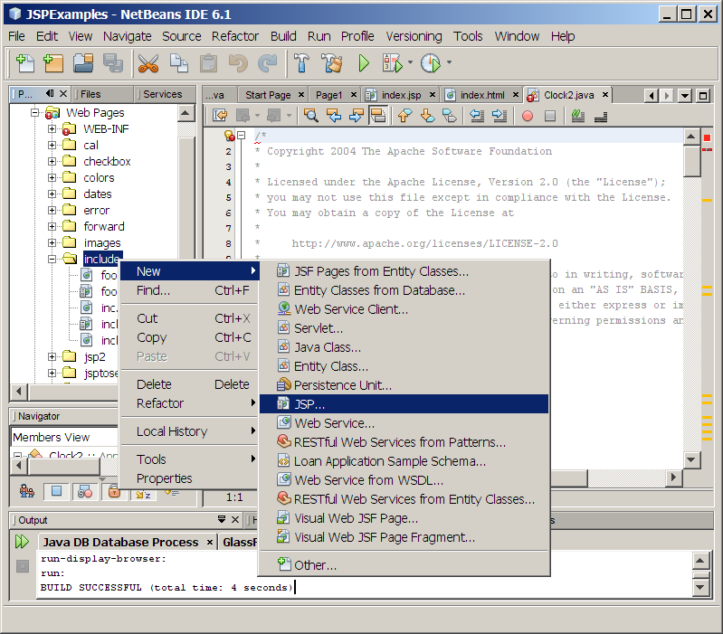
- For the JSP File Name field, enter foo1.
- Click Finish.
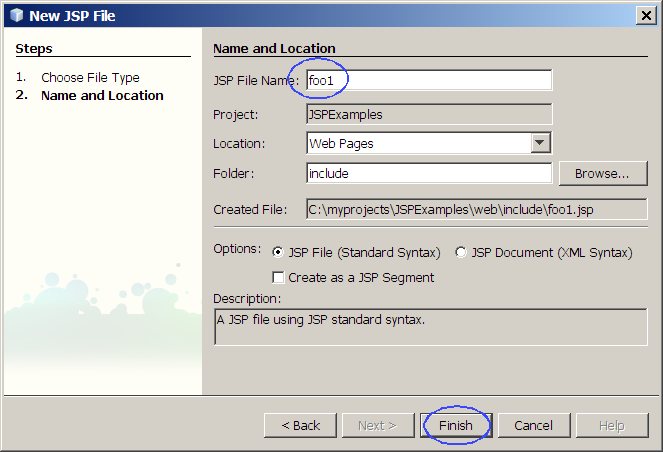
- Modify the code as shown below.
<%@page
contentType="text/html"%>
<%@page pageEncoding="UTF-8"%>
<!DOCTYPE HTML PUBLIC "-//W3C//DTD HTML 4.01 Transitional//EN"
"http://www.w3.org/TR/html4/loose.dtd">
<html>
<head>
<meta
http-equiv="Content-Type" content="text/html; charset=UTF-8">
<title>JSP
Page</title>
</head>
<body>
<h1>This is foo1.jsp</h1>
</body>
</html>
|
Code-2.40: foo1.jsp
3. Modify
include.jsp
under
JSPExamples->Web
Pages->include.
The code fragments that need to be changed from the IDE generated JSP
file are highlighted in
bold and blue
colored font.
<html>
<!--
Copyright 2004 The Apache Software Foundation
Licensed under the Apache License, Version 2.0 (the "License");
you may not use this file except in compliance with the License.
You may obtain a copy of the License at
http://www.apache.org/licenses/LICENSE-2.0
Unless required by applicable law or agreed to in writing,
software
distributed under the License is distributed on an "AS IS" BASIS,
WITHOUT WARRANTIES OR CONDITIONS OF ANY KIND, either express or
implied.
See the License for the specific language governing permissions
and
limitations under the License.
-->
<body bgcolor="white">
<font color="red">
<%@ page buffer="5kb" autoFlush="false" %>
<p>In place evaluation of another JSP which gives you the current
time:
<%@ include file="foo.jsp" %>
<%@
include file="foo1.jsp" %>
<p> <jsp:include page="/include/foo.html" flush="true"/> by
including the output of another JSP:
<jsp:include page="foo.jsp" flush="true"/>
<jsp:include
page="foo1.jsp" flush="true"/>
:-)
</html>
|
Code-2.41: Modified include.jsp
4. Run the application again.
- Right click project node and select Run.
- You should see the Figure-2.42
below.
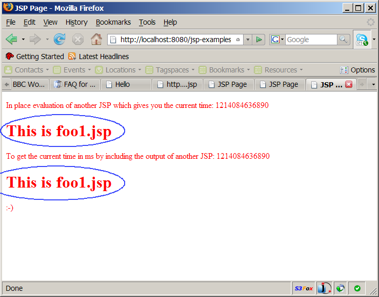
Figure-2.42: Result
return to top of the exercise
(2.5)
Modify "Forward" part of the application
1. Run the "
Forward" part of
the sampe application.
2. Create a new JSP file, called
three.jsp
under
JSPExamples->Web
Pages->forward. Replace the IDE generated JSP file with
the one in Code-2.50 below.
<html>
<!--
Copyright (c) 1999 The Apache Software Foundation. All
rights
reserved.
-->
<body bgcolor="white">
<font color="red">
<h3> This is page number three </h3>
VM Memory usage (from three.jsp) < 80%.
</html>
|
Code-2.50: three.jsp
3. Modify
forward.jsp
under
JSPExamples->Web
Pages->forward.
The code fragments that need to be changed from the IDE generated JSP
file are highlighted in
bold and blue
colored font.
<html>
<!--
Copyright (c) 1999 The Apache Software
Foundation. All rights
reserved.
-->
<%
double freeMem =
Runtime.getRuntime().freeMemory();
double totlMem =
Runtime.getRuntime().totalMemory();
double percent =
freeMem/totlMem;
if (percent < 0.5) {
%>
<jsp:forward page="/forward/one.jsp"/>
<% } else {
if (percent < 0.8) { %>
<jsp:forward page="two.html"/>
<% } else { %>
<jsp:forward page="three.jsp"/>
<% } %>
<% } %>
</html>
|
Code-2.51: Modified forward.jsp
4. Run the application again. If the percent is above or equal to
0.8, you should see the Figure-2.52 below.
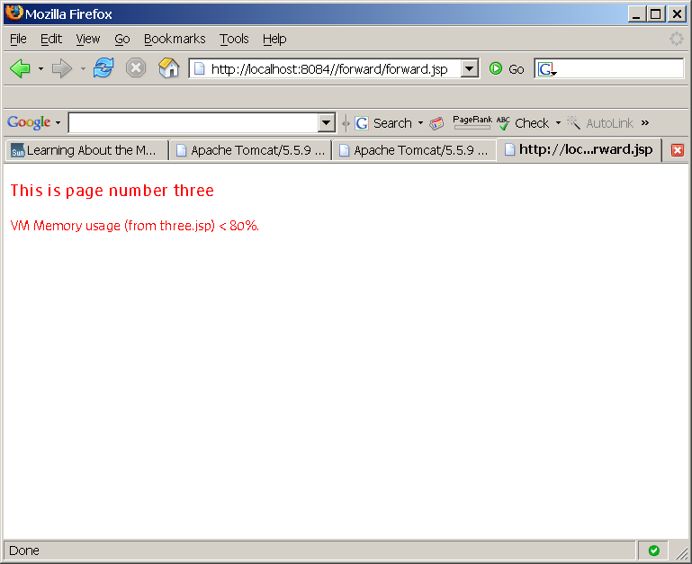
Figure-2.52: three.jsp is displayed as a result of forwarding
return to top of the exercise
(2.6)
Modify "Snoop" part of the application
1. Run the "
Snoop" part of
the sampe application.
2. Observe the result as shown in Figure-2.60 below.
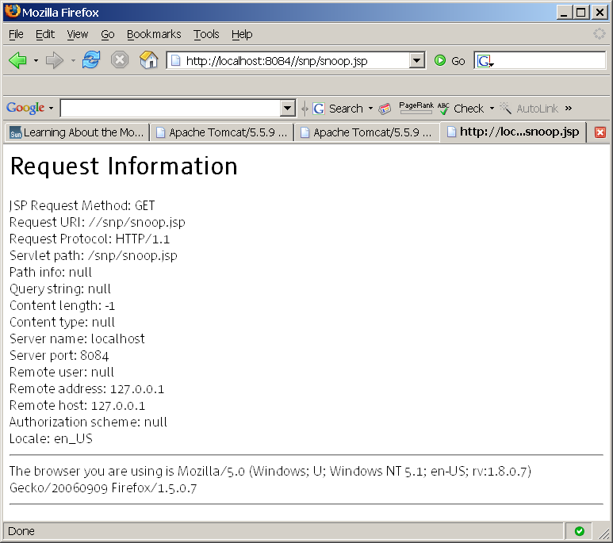
Figure-2.60: The fields of the HTTP request are displayed
3. From the browser, type append a query string as shown in Code-2.61
below.
http://localhost:8084//snp/snoop.jsp?name=sang
|
Figure-2.61: Send a query string
4. Refresh the browser.
5. Observe that the query string is displayed as shown in Figure-2.61
below.
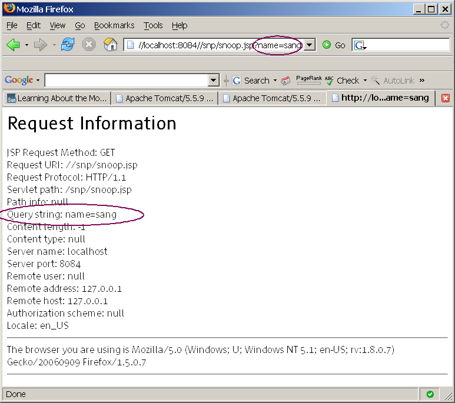
(2.7)
Study "JSP Servlet JSP" part of the application
The "JSP Servlet JSP" part of the application shows how JSP and
Servlets are being forwarded each other. When you clickthe Execute, it will invoke jsptoservlet.jsp, which in turn
forward the control to servletToJsp
servlet, which in turn forwards the control to hello.jsp.
1. Run the "JSP Servlet JSP"
part of
the sampe application.
2. Observe the result as shown in Figure-2.60 below.
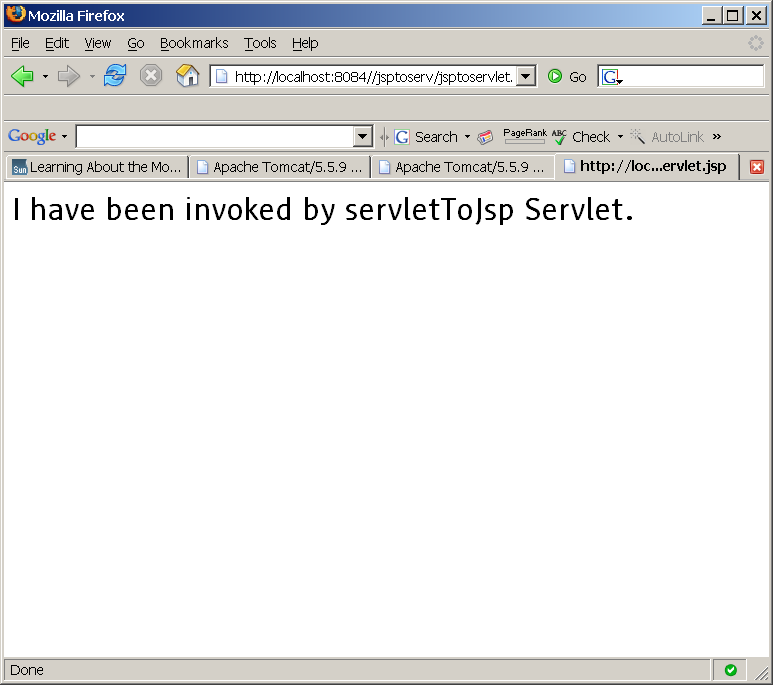
Figure-2.70: Result of running "JSP Servlet JSP" part of the
application.
3. Open
jsptoServlet.jsp under
JSPExamples->Web
Pages->jsptoserv.
4. Observe that the control is forwarded to
/servletToJsp url-pattern.
(Code-2.71 below)
<html>
<!--
Copyright 2004 The Apache Software Foundation
Licensed under the Apache License, Version 2.0 (the "License");
you may not use this file except in compliance with the License.
You may obtain a copy of the License at
http://www.apache.org/licenses/LICENSE-2.0
Unless required by applicable law or agreed to in writing,
software
distributed under the License is distributed on an "AS IS" BASIS,
WITHOUT WARRANTIES OR CONDITIONS OF ANY KIND, either express or
implied.
See the License for the specific language governing permissions
and
limitations under the License.
-->
<body bgcolor="white">
<!-- Forward to a servlet
-->
<jsp:forward
page="/servletToJsp" />
</html>
|
Code-2.71: Control is now forwarded to servletToJsp.
5. Open
web.xml under
JSPExamples->Web Pages->WEB-INF.
6. Obseve that the
/servletToJsp
url-pattern is mapped to a Servlet class called
servletToJsp (The code fragment in
the Code-2.72 below starts from line number 106 of the web.xml file.)
<!--
Define servlets that are included in the example application -->
<servlet>
<servlet-name>servletToJsp</servlet-name>
<servlet-class>servletToJsp</servlet-class>
</servlet>
<servlet>
<servlet-name>CompressionFilterTestServlet</servlet-name>
<servlet-class>compressionFilters.CompressionFilterTestServlet</servlet-class>
</servlet>
<servlet-mapping>
<servlet-name>CompressionFilterTestServlet</servlet-name>
<url-pattern>/CompressionTest</url-pattern>
</servlet-mapping>
<servlet-mapping>
<servlet-name>servletToJsp</servlet-name>
<url-pattern>/servletToJsp</url-pattern>
</servlet-mapping>
|
Code-2.72: Servlet mapping
7. Open
servletToJsp.java
under
JSPExamples->Source
Packages-><default package>.
8. Observe that the a new attribute called "servletName" is added to
the
HttpServletRequest object
and then control is forwarded to
/jsptoserv/hellp.jsp.
(Code-2.73 below)
import javax.servlet.*;
import javax.servlet.http.*;
public class servletToJsp extends HttpServlet {
public void doGet (HttpServletRequest request,
HttpServletResponse response) {
try {
// Set the attribute and Forward
to hello.jsp
request.setAttribute
("servletName", "servletToJsp");
getServletConfig().getServletContext().getRequestDispatcher("/jsptoserv/hello.jsp").forward(request,
response);
} catch (Exception ex) {
ex.printStackTrace ();
}
}
}
|
Code-2.73: servetToJsp.java
9. Open
hello.jsp under
JSPExamples->Web Pages->jsptoserv.
10. Observe that
hello.jsp
displays the value of the newly added attribute called
servletName in the
servletToJsp.java.
<html>
<!--
Copyright 2004 The Apache Software Foundation
Licensed under the Apache License, Version 2.0 (the "License");
you may not use this file except in compliance with the License.
You may obtain a copy of the License at
http://www.apache.org/licenses/LICENSE-2.0
Unless required by applicable law or agreed to in writing,
software
distributed under the License is distributed on an "AS IS" BASIS,
WITHOUT WARRANTIES OR CONDITIONS OF ANY KIND, either express or
implied.
See the License for the specific language governing permissions
and
limitations under the License.
-->
<body bgcolor="white">
<h1>
I have been invoked by
<% out.print
(request.getAttribute("servletName").toString()); %>
Servlet.
</h1>
</html>
|
Code-2.74: hello.jsp
return to top of the exercise
Summary
In this exercise, you have built and run
"JSP Examples" sample application.
return
to the top
Homework Exercise (for people
who
are taking Sang Shin's "Java EE Programming online course")
1.
The homework is to modify the hello1 project as described below. (You
might want to create a new project by copying
the hello1
project. You can name
the
homework project in any way you want
but here I am going to call it Myhello1.)
- Modify index.jsp and response.jsp to ask and
display another
item such as Birth Place or Nationality.
- The index.jsp forwards
the request to another JSP file called middle.jsp.
Before forwarding, it should
add another String type parameter called myparameter with value "Passion!" to the request
object. The middle.jsp
then includes the response.jsp.
The response.jsp should
display the value of the myparameter along
with name and
hobby.
2
. Send the following files to
j2eehomeworks@javapassion.com
with Subject
as J2EEHomework-jspbasics.
- Zip file of the the Myhello1
NetBeans project. (Someone else
should be able to open and run it as a NetBeans project.) You can
use your favorite zip utility or you can use "jar" utility that comes
with JDK as following.
- cd <parent directory that contains Myhello1 directory>
(assuming you named your project as Myhello1)
- jar cvf Myhello1.zip Myhello1 (Myhello1
should contain nbproject
directory)
- Captured output screen -
name it as J2EEHomework-jspbasics.gif
orJ2EEHomework-jspbasics.jpg (or J2EEHomework-jspbasics.<whatver
graphics format>)
- Any screen capture that shows that your program is working is
good enough.
- If you decide to use
different IDE other than NetBeans, the zip
file should contain all the files that are needed for rebuilding the
project - war file with necessary source files is OK.